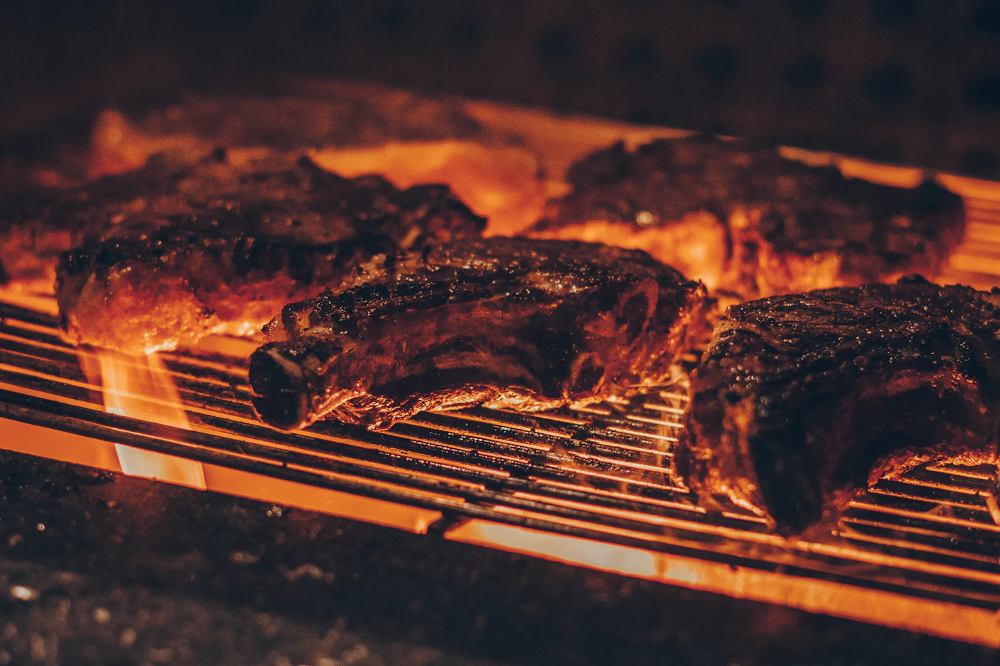

How we cook
Less decoration.
More flavour.
We work with familiar recipes, nearby suppliers and a contemporary eye.
Almi Chain offers different spaces with one idea: every dish has a clear origin and every visit feels close to home.